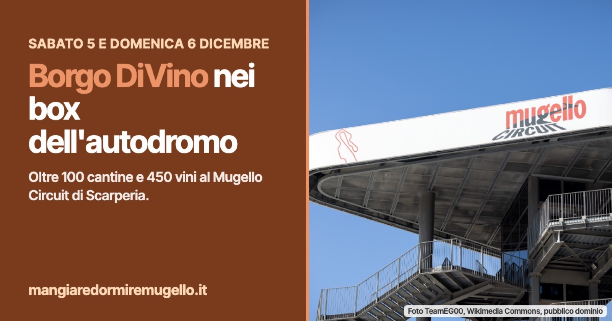

Scarperia, Borgo DiVino porta il vino nei box dell'autodromo
Sabato 5 e domenica 6 dicembre 2026 all'Autodromo del Mugello: oltre 100 cantine e 450 vini, vendita diretta al banco, biglietti da 18 euro. E dove mangiare e dormire a Scarperia.

Dove di solito si cambiano le gomme, a dicembre si stappano bottiglie. Sabato 5 e domenica 6 dicembre 2026 i box dell'Autodromo Internazionale del Mugello, a Scarperia e San Piero, ospitano Borgo DiVino, il festival del vino arrivato alla nona edizione. Gli organizzatori annunciano più di 100 cantine da tutta Italia e oltre 450 vini in degustazione. Si entra dalle 10:30 alle 19:30, tutti e due i giorni.
Dalla villa al circuito
Borgo DiVino è nato nel 2018. Fino al 2022 si è tenuto a Villa Pecori Giraldi, a Borgo San Lorenzo, poi dal 2023 al 2025 al Golf Club Poggio dei Medici, con alcuni appuntamenti anche al Centro Rogers di Scandicci. Quest'anno cambia casa e si trasferisce in autodromo.
Secondo gli organizzatori, l'ultima edizione autunnale ha avuto quasi 2.000 visitatori, 102 aziende e 150 operatori del settore accreditati.
Cosa si trova nei box
Degustazioni libere ai desk dei produttori, con kit e calice compresi nel biglietto: il calice si porta a casa.
Vendita diretta: è la novità di questa edizione. Le più di 450 etichette si possono comprare al desk di ogni produttore, a prezzi di vendita diretta.
Masterclass: degustazioni guidate nelle salette VIP che si affacciano sul rettilineo. Il programma non è ancora pubblicato.
Ristorante aperto all'interno della struttura, per una pausa tra un assaggio e l'altro, e parcheggio nel paddock della pista, a pochi metri dall'ingresso.
Il festival si rivolge agli appassionati, ai sommelier e agli operatori del settore, per i quali è anche un appuntamento di lavoro tra aziende.
Biglietti e prezzi
Intero: 22 euro, in prevendita online (più le commissioni) oppure sul posto.
Ridotto: 18 euro, sul posto, per i soci di OFF.CU.BO., Banco Fiorentino, FISAR e GoWine e per chi ha la credenziale di Orme del Mugello con tessera valida.
Abbonamento per i due giorni: 30 euro, solo in cassa durante il festival.
Tutti i biglietti comprendono il calice VD-Glass e le degustazioni ai desk delle cantine. Prevendita e informazioni: https://www.borgo-divino.it/per-i-visitatori/
Chi lo organizza
Borgo DiVino è organizzato da Periscopio Comunicazione, dall'associazione OFF.CU.BO. (Officina Cultura Borgo San Lorenzo) e da Vigo Service, con il patrocinio del Comune di Scarperia e San Piero, della Città Metropolitana di Firenze e del Consiglio Regionale della Toscana.
Mangiare e dormire a Scarperia
Per chi arriva da fuori e vuole fermarsi nel weekend:
Dove mangiare a Scarperia e San Piero: https://mangiaredormiremugello.it/dove-mangiare/scarperia-e-san-piero/
Dove dormire a Scarperia e San Piero: https://mangiaredormiremugello.it/dove-dormire/scarperia-e-san-piero/
Fonte: Borgo DiVino, sito ufficiale